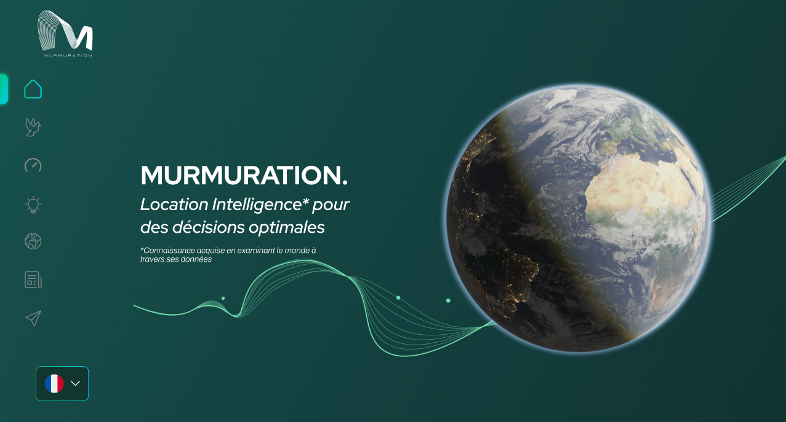
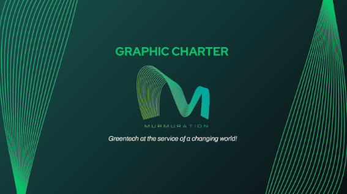
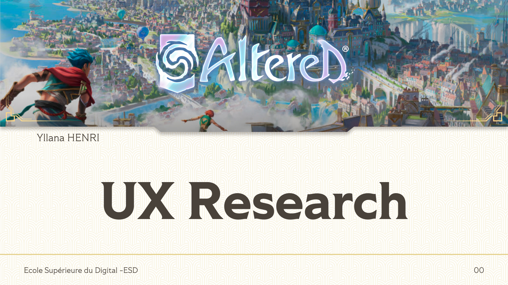

UI/UX Designer with a love for empathy, research and thoughtful details.
Turning complexity into clear human experiences
Case studies

Murmuration - Visual identity

Altered - UX Research
Who’s behind the design?
Hi, I’m a UI/UX Designer who loves turning complex ideas into clear, friendly, and human-centered experiences.
I design with empathy at heart, paying close attention to how people feel, understand, and interact with products. For me, good design is not just about aesthetics. It’s about clarity, accessibility, and making users feel comfortable and confident.
Naturally curious and always smiling, I enjoy collaborating closely with developers and teams, learning along the way, and building thoughtful interfaces that are both useful and enjoyable to use.
Discover more about me